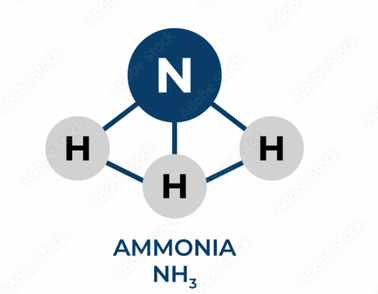
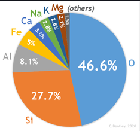

Chemical composition
| Vietnamese | Thành phần hóa học |
|---|---|
| English | Chemical composition |
| Pronunciation | /ˈkemɪkəl ˌkɑːmpəˈzɪʃən/ |
| Word type | noun (as labelled in the PDFs) |
Topic 3 — Meaning (Vietnamese)
các nguyên tố và tỉ lệ các nguyên tố đó trong 1 chất
Meaning (English)
the types and relative amounts of elements present in a substance (các nguyên tố và tỉ lệ các nguyên tố đó trong 1 chất)
Example
Scientists analyzed the chemical composition of the sample to identify the elements it contained. (Các nhà khoa học đã phân tích thành phần hóa học của mẫu để xác định những nguyên tố có trong đó.)
Images from the PDFs


